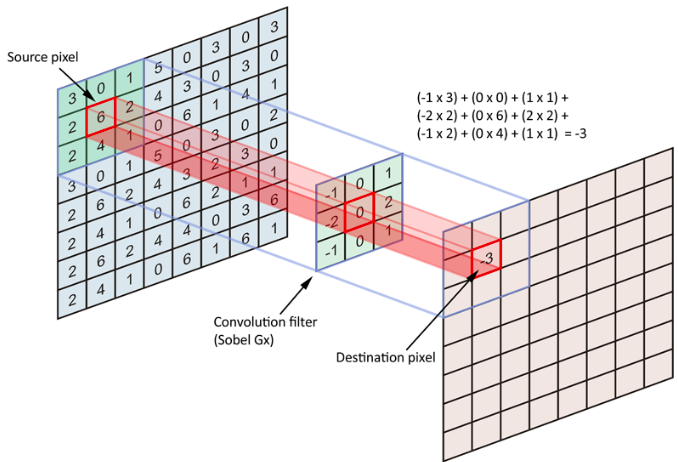
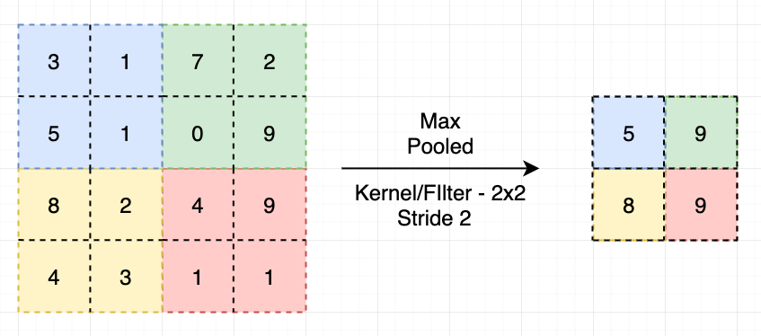
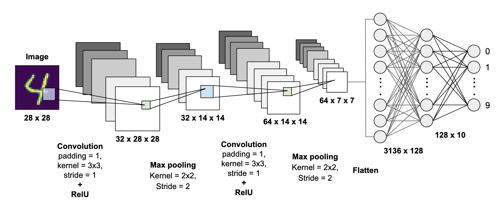

Project Description:-
The handwritten digit recognition is the ability of computers to recognize human handwritten digits. It is a hard task for the machine because handwritten digits are not perfect and can be made with many different flavors. The handwritten digit recognition is the solution to this problem which uses the image of a digit and recognizes the digit present in the image.
About The Dataset:-
The MNIST problem is a dataset developed by Yann LeCun, Corinna Cortes and Christopher Burges for evaluating machine learning models on the handwritten digit classification problem. The dataset was constructed from a number of scanned document dataset available from the National Institute of Standards and Technology (NIST). This is where the name for the dataset comes from, as the Modified NIST or MNIST dataset. Images of digits were taken from a variety of scanned documents, normalized in size and centered. This makes it an excellent dataset for evaluating models, allowing the developer to focus on the machine learning with very little data cleaning or preparation required. Each image is a 28 by 28 pixel square (784 pixels total). A standard split of the dataset is used to evaluate and compare models, where 60,000 images are used to train a model and a separate set of 10,000 images are used to test it. It is a digit recognition task. As such there are 10 digits (0 to 9) or 10 classes to predict. Results are reported using prediction error, which is nothing more than the inverted classification accuracy.
About The Model:-
We made this model using CNN. A CNN model generally consists of convolutional,pooling and dense layers. It works better for data that are represented as grid structures, this is the reason why CNN works well for image classification problems. The dropout layer is used to deactivate some of the neurons and while training, it reduces offer fitting of the model. We will then compile the model with the Adam optimizer.
Layers Used in this model:-
1. Convolution Layer:-
The convolutional layer computes the convolutional operation of the input images using kernel filters to extract fundamental features. The kernel filters are of the same dimension but with smaller constant parameters as compared to the input images. As an example, for computing a 7x7 2D scalogram image, the acceptable filter size is f × f , where f = 3 and so on. But the filter size needs to be smaller compared to that of the input image. The filter mask slides over the entire input image step by step and estimates the dot product between the weights of the kernel filters with the value of the input image, which results in producing a 2D activation map. Hence, CNN will learn a visual feature. Fig. 6.6 illustrates a simple example of the computing activation map.
Convolutional layer is made of all the driven feature maps.
2. Pooling Layer:-
Pooling layers are used to reduce the dimensions of the feature maps. Thus, it reduces the number of parameters to learn and the amount of computation performed in the network. The pooling layer summarises the features present in a region of the feature map generated by a convolution layer. So, further operations are performed on summarised features instead of precisely positioned features generated by the convolution layer. This makes the model more robust to variations in the position of the features in the input image.There are many type of pooling in CNN like Max Pooling, Avg Pooling etc. In this model I have used Max Pooling.
3. Flatten Layer:-
Flattening is converting the data into a 1-dimensional array for inputting it to the next layer. We flatten the output of the convolutional layers to create a single long feature vector. And it is connected to the final classification model, which is called a fully-connected layer or Dense Layer.
4. Dense Layer:-
The name suggests that layers are fully connected (dense) by the neurons in a network layer. Each neuron in a layer receives an input from all the neurons present in the previous layer—thus, they’re densely connected. In other words, the dense layer is a fully connected layer, meaning all the neurons in a layer are connected to those in the next layer. A densely connected layer provides learning features from all the combinations of the features of the previous layer, whereas a convolutional layer relies on consistent features with a small repetitive field.
